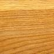

Tölgy

A tölgy fűrészáru (különösen a hazai kocsányos és kocsánytalan tölgy) a robusztus erő és a megbízhatóság abszolút bajnoka, a hagyományos európai asztalosmesterség alapköve. Színe a világos sárgásbarna tónusoktól a középbarnáig terjed, jellegzetes, durvább pórusú szerkezetét pedig markáns, határozott vonalvezetésű évgyűrűk díszítik. Kifejezetten nehéz, kemény és rugalmas faanyag, amely kimagasló kopásállósággal és bámulatos strukturális stabilitással büszkélkedhet. Magas csersavtartalmának köszönhetően a gombákkal és a korhadással szemben is rendkívül ellenálló. Emiatt a tulajdonsága miatt a tölgy az egyik azon kevés keményfák közül, amely nemcsak prémium beltéri bútoroknak, lépcsőknek és parkettáknak tökéletes, de megfelelő kezeléssel kültéri szerkezetekhez, teraszburkolatokhoz vagy kerti bútorokhoz is bátran használható.
Központi faáru raktárunkban most kiváló minőségű, műszárított, szélezett tölgy pallók érhetők el a komolyabb igénybevételű projektekhez. A legnépszerűbb, 40 mm vastag, 160 mm széles és 2 méter hosszú tölgy pallónk darabára 13 290 Ft. Megmunkálásakor érdemes éles, minőségi szerszámokat használni, mert keménysége miatt jobban igénybe veszi a vágóéleket, valamint figyelni kell arra, hogy a csersav miatt a vassal érintkezve (például nem rozsdamentes csavarok esetén) a fa kékesfeketére színeződhet. Felületkezeléséhez a tölgyhöz kifejlesztett viaszok és olajok ajánlottak, amelyek gyönyörűen kiemelik a fa rusztikus, karakteres textúráját.